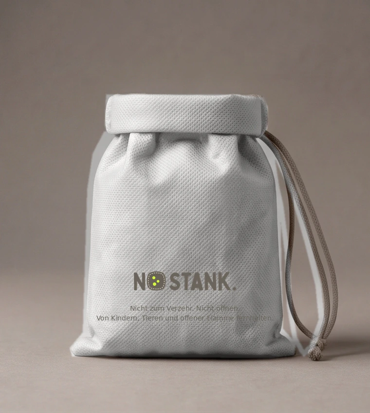

Aktivkohle-Säckchen · 50 g · Kokosschalen
Gestank.Einfachweg.
Neutralisiert unerwünschte Gerüche.
 ↔ Ziehen zum Drehen
50 g
↔ Ziehen zum Drehen
50 g
Wie funktioniert Aktivkohle?
Physik statt
Parfüm.
Vom Geruch in der Luft bis ins Innerste eines Kohlekorns: Hier siehst du, wo die Moleküle bleiben.
Riechen ist Moleküle wahrnehmen. Die kleinen Teilchen schweben frei durch die Luft.
Das Vlies lässt Luft durch. Im Inneren wartet Aktivkohle-Granulat aus Kokosschalen.
Adsorption statt Überdeckung. Die Moleküle haften an der riesigen inneren Oberfläche — und bleiben dort.
Aktivkohle hat eine riesige innere Oberfläche — ein einziges Gramm hat die Fläche eines Tennisplatzes. Geruchsmoleküle lagern sich an dieser Oberfläche an (Adsorption) und bleiben dort. Es wird nichts überdeckt, es wird nichts maskiert: Der Geruch verschwindet, weil er gebunden wird.
Der Unterschied zu Duftsprays: Sprays fügen einen neuen Geruch hinzu. Aktivkohle nimmt den alten weg.
Wie verwende ich die Säckchen?
Auspacken.
Platzieren. Fertig.
Kein Spray, kein Strom, kein Aufwand. Drei Schritte — und die Kohle macht den Rest.
Frisch halten bis zum Einsatz. Öffne den luftdichten Zip Bag erst, wenn du das Säckchen brauchst.
Dorthin, wo es riecht. Im Schrank, WC oder beim Abfalleimer platzieren — oder mit der Kordel aufhängen.
Ein Ventilator ist optional. Bei hoher Geruchslast oder in grösseren Umluftbereichen bringt moderate Luftbewegung zusätzliche Moleküle zur Kohle.
Wann ein Ventilator sinnvoll ist.
In kleinen, geschlossenen Räumen reicht es, das Säckchen am Geruchsort zu platzieren oder aufzuhängen — ein Ventilator ist nicht nötig. Bei höherer Geruchslast oder grösseren Umluftbereichen kann ein bereits vorhandener Ventilator die Wirkung unterstützen: Hänge das Säckchen frei in eine moderate Luftströmung.
- Ohne Ventilator: direkt am Geruchsort platzieren oder aufhängen
- Mit Ventilator: frei in moderate Luftströmung hängen
- Nicht auf das Gerät legen und Luftein- und -austritt frei halten
Dosierung
Die Faustregel:
50–100 g pro m³.
Ein Säckchen (50 g) ist ideal für kleine, geschlossene Räume bis ca. 1 m³ — z. B. Schränke, Abfalleimer-Umgebung, WC — oder das Zimmer, in dem deine Tomaten überwintern.
Für grössere Räume: verteile mehrere Säckchen (Multi-Sack-Strategie) statt ein grosses Produkt zu kaufen. So bleibt die Kontaktfläche pro Volumen hoch.
Der Säckchen-Rechner
Wie viele braucht dein Raum?
Raumvolumen0.58 m³
1–2 Säckchen
Je höher die Geruchslast, desto eher am oberen Ende dosieren.
Pflege & Austausch
Eine Kohle,
viele Leben.
Gut gepflegt hält das Säckchen deutlich länger als ein Wegwerfprodukt — und du merkst rechtzeitig, wann es Zeit wird.
- 01
Luftdicht lagern
Säckchen vor Gebrauch luftdicht im Zip-Bag aufbewahren — erst vor Gebrauch öffnen.
- 02
Alle 4–8 Wochen prüfen
Nach Wochen bis Monaten (je nach Geruchslast) ist die Oberfläche voll — bei starker Belastung regelmässig kontrollieren.
- 03
Regenerieren: 120 °C, 2–3 h
Säckchen 2–3 Stunden bei 120 °C im Ofen erhitzen — die gebundenen Moleküle werden freigesetzt, die Kohle wirkt wieder.
- 04
Oder ersetzen
Hat sich eine Fett- oder Feuchteschicht gebildet, ist die Regeneration begrenzt — dann ist Austausch die ehrliche Lösung.
Für Händler:innen
Verkauf
ohne Risiko.
Du führst ein Sortiment für Pflanzen-Liebhaber mit hohen Ansprüchen, CBD-Produkte oder einen Kiosk? NO STANK. läuft auf Kommission — du trägst nichts, wir tragen den Rest.
Probemuster + Display anfragenAntwort innert 48 Stunden. Kein Abo, kein Mindestbestand.
Kein Risiko
Rückkaufgarantie und Eigentumsvorbehalt — unverkaufte Ware gehört uns, nicht dir.
Marge
Auf 5.90 CHF Retail bleiben dir bis zu 2.10 CHF pro Stück — bei ca. 0.35 CHF Wareneinsatz.
Display mit QR
Verkaufsfertiges Display — direkt an die Kasse stellen, Kund:innen scannen, verstehen, kaufen.
Monatsabrechnung
Einmal im Monat abrechnen, Probemaster zum Kennenlernen inklusive.
bei dir.

Wo erhältlich?
Bald in
deinem Shop.
NO STANK. gibt es in ausgewählten Shops — die Liste wächst gerade. Dein Shop führt es noch nicht? Hier mitmachen.
Kontakt & Impressum
Impressum
Erdem TertemizBenkenstr. 66
4102 Binningen, Schweiz
info@nostank.ch
Einzelunternehmen ohne Handelsregister-Eintrag.
Noch Fragen?
Fragen zum Produkt, zur Dosierung oder zur Händler-Kommission — schreib uns:
info@nostank.ch